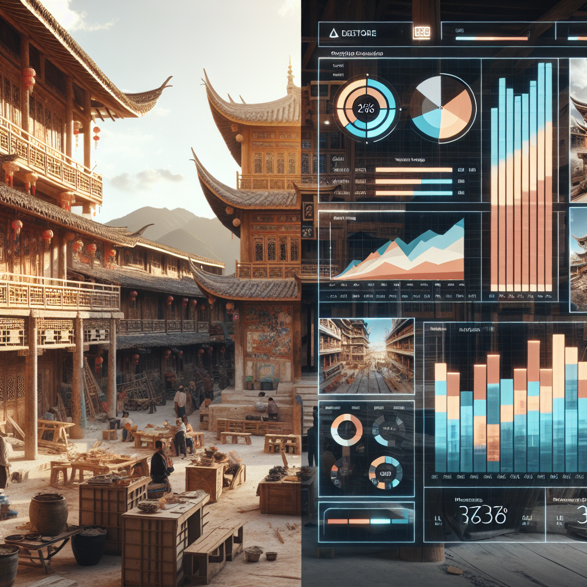
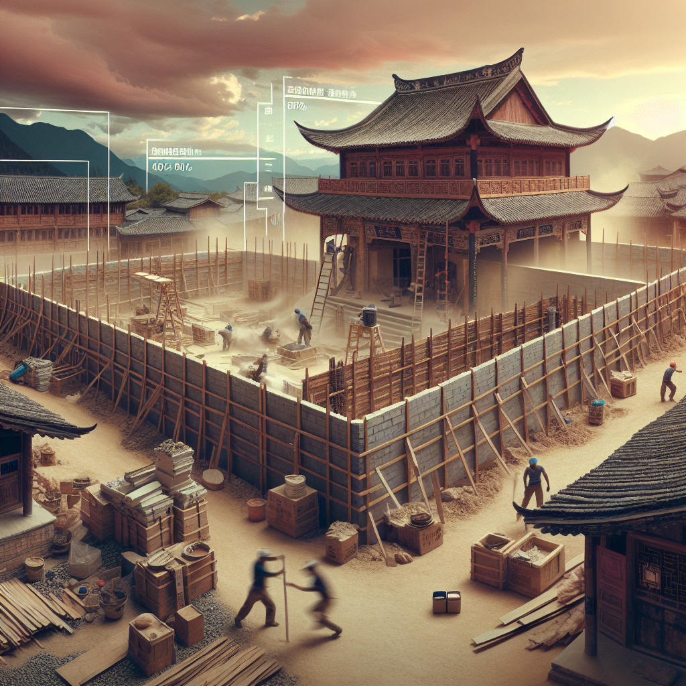
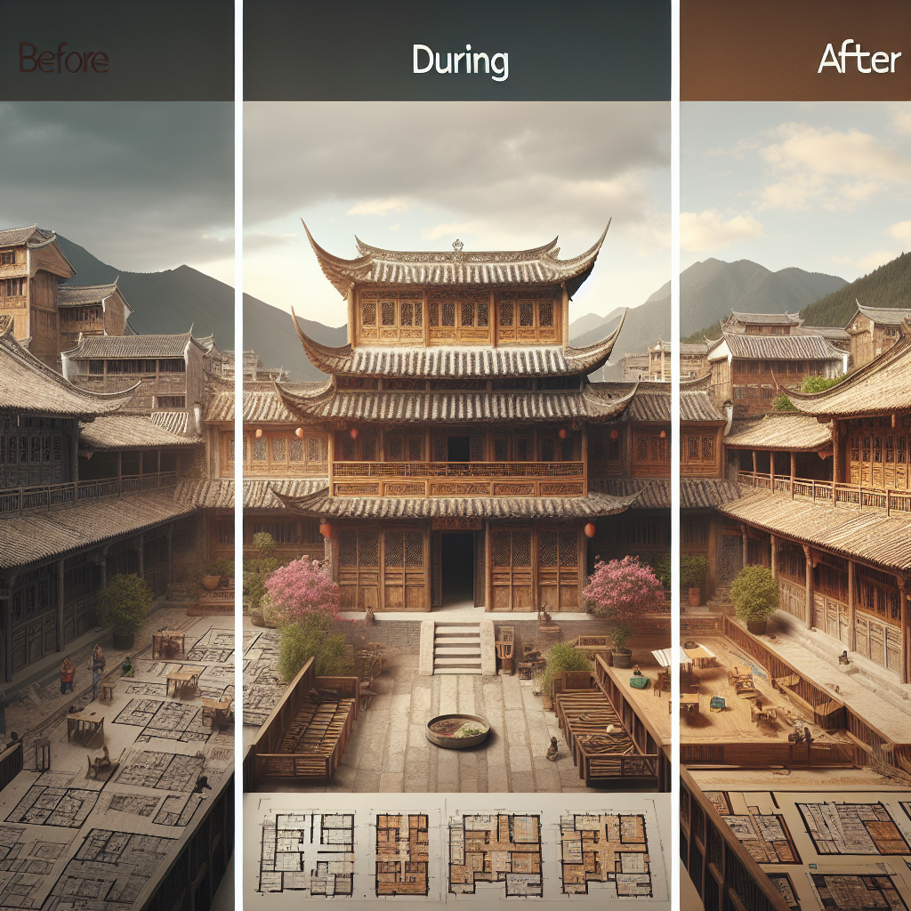

Sunrise over Lijiang ancient town, golden hour lighting, traditional Naxi architecture construction site in Lijiang ancient town, with wooden structures and traditional Chinese courtyard elements. A m...
场景 A-2 (0:08-0:15)
📝 场景描述
老木匠李师傅开始工作，特写他熟练的手法
🎯 DALL-E 提示词
Close-up of weathered hands of an elderly Chinese master carpenter working with traditional woodworking tools. Detailed shot of skilled craftsmanship on traditional Chinese wooden joints and mortise-t...
场景 B-1 (0:15-0:25)

📝 场景描述
分屏展示：左侧是工地实况，右侧是AI进度监控面板
🎯 DALL-E 提示词
Split-screen composition: left side shows active construction site with workers, right side displays modern AI monitoring dashboard with progress charts, weather data, and construction analytics. trad...
场景 B-2 (0:25-0:35)
📝 场景描述
舅舅与工头老杨讨论进度，展示平板上的3D模型
🎯 DALL-E 提示词
Two Chinese men discussing construction plans: middle-aged site manager and experienced foreman examining a tablet displaying 3D architectural models. traditional Naxi architecture construction site i...
场景 C-1 (0:35-0:45)

📝 场景描述
延时摄影：墙体砌筑快速成型过程
🎯 DALL-E 提示词
Time-lapse effect showing wall construction progress from foundation to completion. Multiple exposure composite showing the building process stages. traditional Naxi architecture construction site in ...
场景 C-2 (0:45-0:55)
📝 场景描述
舅舅通过视频与我沟通，展示工地现状和问题点
🎯 DALL-E 提示词
Video call scene: middle-aged Chinese man at construction site holding smartphone/tablet showing video conference interface. Split composition showing both local construction site view and remote cons...
场景 D-1 (0:55-1:05)
📝 场景描述
材料进场与智能管理：工人扫描材料二维码进行登记
🎯 DALL-E 提示词
Construction workers scanning QR codes on building materials using smartphones for digital inventory management. traditional Naxi architecture construction site in Lijiang ancient town, with wooden st...
场景 D-2 (1:05-1:15)
📝 场景描述
工人休息时间，舅舅向他们展示施工进度可视化图表
🎯 DALL-E 提示词
Group of Chinese construction workers during break time, gathered around site manager showing progress visualization charts on tablet. Relaxed, positive atmosphere. traditional Naxi architecture const...
场景 E-1 (1:15-1:25)
📝 场景描述
当日收工，系统自动生成进度报告和次日计划
🎯 DALL-E 提示词
End of workday scene at construction site during golden hour sunset. traditional Naxi architecture construction site in Lijiang ancient town, with wooden structures and traditional Chinese courtyard e...
场景 F-1 (1:25-1:40)

📝 场景描述
进度对比：分屏展示重建前、规划图和当前进度
🎯 DALL-E 提示词
Three-panel comparison layout: left shows historical/before state, center displays architectural planning drawings, right shows current construction progress. traditional Naxi architecture constructio...